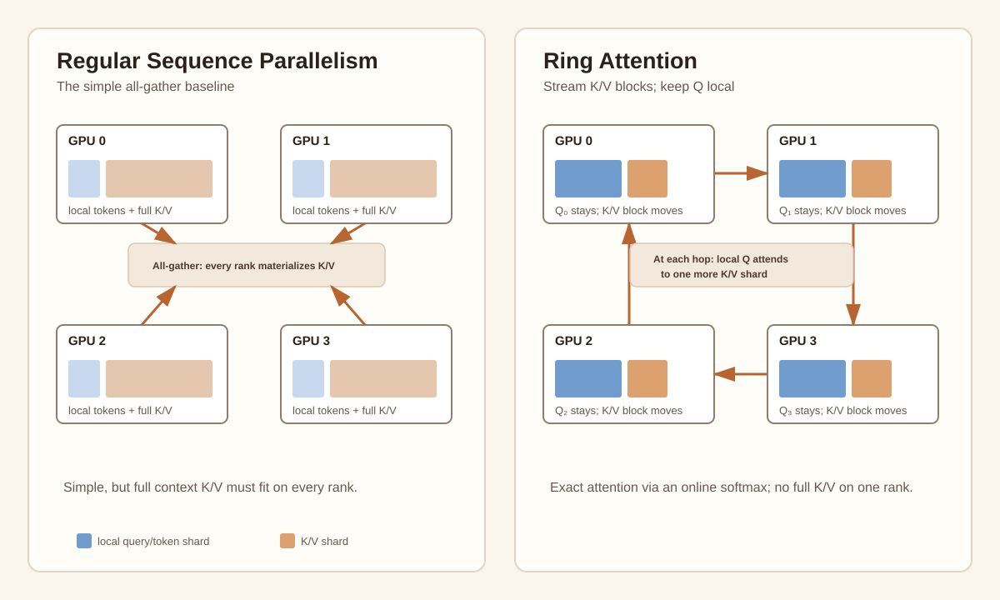

AI
Transformer Parallelism
What each parallelism dimension partitions: model state, a Linear layer's channels, layers, tokens, or MoE experts.

Large-model training becomes much easier to reason about once you stop treating parallelism as a bag of acronyms. Every technique answers one question: what is too large for one GPU, and along which independent dimension can I split it?
| Method | What is partitioned? | Primary purpose |
|---|---|---|
| Data Parallel / FSDP | Data / model states | Increase batch scale; reduce memory for parameters, gradients, and optimizer states. |
| Tensor Parallel | Hidden or head channels inside one Linear / attention layer | Shard that layer's weights, channel-direction activations, and computation across GPUs. |
| Pipeline Parallel | Contiguous network blocks | Split a model that is too deep for one GPU or node. |
| Sequence / Context Parallel | Sequence / token dimension | Make long contexts and their activations or attention fit. |
| Expert Parallel | MoE experts | Increase total model capacity without activating every parameter for every token. |
Data parallelism and FSDP: split examples vs. split model state
In ordinary data parallelism, every GPU has a complete model but receives a different mini-batch. Gradients are all-reduced, so every replica applies the same update. This is the natural way to improve throughput once one model replica fits.
Fully Sharded Data Parallel (FSDP) shards model state, not a layer's computation: each rank stores only its parameters, gradients, and optimizer-state shard; it all-gathers parameters before a wrapped unit and reduce-scatters gradients after backward. FSDP does not shard that unit's activations or split its Linear operations across GPUs. Its primary purpose is model-state memory.
Why DDP overlaps gradient communication with backward, not forward
For ordinary DDP, the communicated object is the gradient. A gradient bucket becomes available only when backward has produced it. As soon as, say, the final layers have produced a bucket, DDP can launch its all-reduce while the GPU continues backpropagating through earlier layers. The useful overlap is therefore communication from already-finished layers hidden under computation from layers that remain.
Forward cannot hide that same gradient all-reduce: this iteration has no gradients until backward starts. Nor can a standard synchronous-SGD job simply begin the next forward pass while the previous iteration's reduction is outstanding. The dependency is forward → backward → gradient all-reduce → optimizer step → next forward; the next forward needs the newly synchronized parameters. Techniques that break or relax that ordering exist, but change the scheduling or optimization semantics.
This rule is specific to gradient communication in DDP. FSDP/ZeRO can prefetch parameter all-gathers under either forward or backward; tensor parallel has collectives in both directions; and pipeline parallel interleaves forward and backward micro-batches to reduce bubbles. The general rule is simpler: overlap a communication operation with any independent computation that remains after its inputs are ready.
FSDP, frozen modules, and the hidden lifetime of GPU memory
FSDP makes parameters look smaller in steady state, but it does not eliminate their full-size lifetime. A wrapped unit all-gathers a full parameter buffer before it computes, uses that buffer in forward or backward, then reshards it so only each rank's shard remains. In a multi-component video-training job, this matters: a Text Encoder, DiT, VAE, and reward model may take turns borrowing the same GPU memory pool. The dangerous number is often the transient peak, not the memory reported after an iteration finishes.
CUDA makes this more subtle because NCCL collectives run on communication streams separate from the user-facing compute stream. If a tensor is freed by Python while NCCL might still read it, the caching allocator must not hand its storage to a new tensor too early. The traditional solution is recordStream(): it associates that allocation with the communication stream and holds it back from reuse until the stream's pending work completes.
This is correct, but conservative. With many asynchronous all-gathers, reduce-scatters, and variable-sized activation buffers, those delayed returns can create a long tail of temporarily unavailable memory and aggravate fragmentation. PyTorch's FSDP design discussion describes the trade-off directly: recordStream delegates cross-stream safety to the allocator, while explicit stream/event synchronization can make memory use more deterministic.
What TORCH_NCCL_AVOID_RECORD_STREAMS changes
In older PyTorch configurations, setting TORCH_NCCL_AVOID_RECORD_STREAMS=1 asks ProcessGroupNCCL to avoid this recordStream-based path. Instead of marking allocations as in-use on the NCCL stream, it retains references to the collective's participating tensors until the user stream has rejoined the communication stream. That still prevents unsafe reuse, but it narrows the lifetime to an explicit synchronization boundary rather than an allocator-managed stream association.
The important nuance is that this does not free a buffer before NCCL has finished using it. It aims to remove the unpredictable post-collective reuse delay. In workloads with frequent cross-stream communication, that can lower peak allocated/reserved memory and reduce allocator churn; in other workloads it may make little measurable difference.
0 enables the record-streams fallback, indicating that newer releases have moved toward avoidance by default. Older releases may need an explicit =1. Always check the exact PyTorch version and compare a warm profiling run with and without it; a 2025 PyTorch forum case confirmed the flag as a fix for allocator memory thrashing, but that is evidence for a workload class, not a universal tuning rule.Why frozen parameters need a separate FSDP path
A trainable FSDP unit has a natural backward lifecycle: gradients appear, a post-backward path can reduce-scatter them, and the full parameter buffer can be reshared. A frozen unit has requires_grad=False, so it may not traverse the same parameter-gradient and post-backward machinery even though its full parameters were temporarily materialized for forward. If release work is implicitly tied to that normal backward path, those full buffers can remain resident longer than intended.
This explains the otherwise cryptic implementation notes in the Seedance 1.0 report. The authors say they manually managed an FSDP free_event_queue and used register_post_backward_reshard_only_hook under frozen mode. Read this as a scheduling intervention:
A reshard-only hook does not need to reduce or synchronize a nonexistent parameter gradient. Its job is to put the full parameter buffer back into its sharded representation at a safe, deliberately chosen point in backward. Managing the pending CUDA-event queue serves the same goal: once an event proves the asynchronous use has completed, advance the queue so the storage can actually become reusable.
These last two names should be treated carefully. free_event_queue and register_post_backward_reshard_only_hook are not stable public FSDP APIs documented for ordinary users; the report does not publish their implementation. They are best understood as custom or internal hooks for an unusual regime: frozen and trainable components coexisting, dynamic component swapping, and tight memory headroom. Reproducing the exact behavior requires auditing the FSDP version and its stream/event invariants, not merely copying a method name.
The general lesson is more durable than the workaround: profile memory over time, including the distinction between allocated, reserved, and non-reusable blocks; then optimize the lifetime boundary responsible for the peak. For long-video jobs, choosing different sequence-parallel degrees per component is part of the same exercise. A long-sequence DiT may benefit from a large SP group because activations dominate, while a short-context text encoder may lose more to communication than it saves in memory.
Sources: PyTorch CUDA environment variables; ProcessGroupNCCL source comments; PyTorch FSDP stream and memory design discussion; allocator-thrashing case study.
Tensor parallelism: split one layer without breaking the math
Tensor parallelism is for when one layer itself is too large. It shards the weights and channel-direction intermediate activations of that layer, so each GPU computes one channel shard. Consider a Transformer MLP, folding batch and sequence into one token dimension:
W1 ∈ ℝD × H, W2 ∈ ℝH × D
H = GELU(XW1), Y = HW2
For tensor-parallel degree t, the standard Megatron-style arrangement is:
In this layout, X is replicated inside the TP group, while W1, H, and the channel-direction computation are sharded. The first projection creates disjoint hidden features, so GELU is local; the second produces partial outputs that require one sum. This is the distinction from FSDP: FSDP reconstructs full parameters for an unsplit layer computation, while TP keeps the layer's channel shards distributed.
The same idea applies to attention: Q/K/V projections are typically split by heads, each rank computes its local heads, and the output projection combines the partial results. This layout is the foundation of Megatron-LM.
Pipeline parallelism: split the model by depth
Pipeline parallelism assigns consecutive layers to different stages: for example, layers 1–8 on GPU group 0, 9–16 on group 1, and so on. Micro-batches move through those stages like work through a factory. Its drawback is the pipeline bubble: some stages are temporarily idle at the beginning and end of each batch. More micro-batches reduce the bubble, but increase scheduling complexity.
Context parallelism: long sequences are a different scaling axis
Sequence or context parallelism splits tokens across GPUs. Token-wise operations such as LayerNorm, dropout, and residual connections can run locally. Attention is harder: a query needs to interact with keys and values from the whole sequence.

The straightforward baseline is to all-gather the sequence so every rank has full K/V, then compute its assigned work. It is simple, but each rank materializes the full context. Ring Attention keeps local query blocks fixed and circulates K/V blocks around a ring. At each hop, a rank attends to one more K/V shard and updates a running softmax state. After p − 1 hops, every local query has seen all K/V without one GPU ever storing every K/V block at once.
Regular sequence parallelism vs. Ring Attention vs. Ulysses
“Sequence parallelism” is an umbrella term, so it helps to state the implementation rather than rely on the name alone. Here, “regular” means the simple all-gather baseline.
| Regular SP baseline | Ring Attention | Ulysses | |
|---|---|---|---|
| Before attention | Token shards are all-gathered; ranks materialize full K/V. | Each rank retains local Q/K/V token blocks. | Starts token-sharded; an all-to-all converts it to full sequence + head shards. |
| Communication | All-gather, then usually scatter/reduce later. | p − 1 K/V ring hops, which can overlap with blockwise attention. | All-to-all before attention and another all-to-all after it. |
| Local attention work | Assigned heads or tensor shards over gathered context. | Local query tokens attend to streamed K/V blocks. | Full sequence, but only Nh/p attention heads. |
| Key constraint | Full K/V must fit per rank. | More communication steps as p grows. | Usually p must divide and not exceed the number of attention heads. |
| Best fit | Simple implementations and moderate context. | Very long context; avoid full K/V materialization. | Fast all-to-all fabrics and enough attention heads. |
Ulysses is a particularly elegant layout transform. It begins with [sequence shard, all heads]. An all-to-all changes it to [full sequence, head shard], so each GPU can run ordinary local attention on a subset of heads. A second all-to-all restores the original sequence-sharded layout. That is why Ulysses is fundamentally different from Ring Attention: it exchanges the sharding axis, rather than streaming K/V through a ring. See the DeepSpeed Ulysses overview for the implementation view.
Expert parallelism: scale capacity sparsely
Mixture-of-Experts replaces one dense MLP with many experts. A router chooses a small top-k set for each token:
Expert parallelism places different experts on different GPUs. Tokens are dispatched to the GPUs that host their selected experts with an all-to-all; those expert outputs are then sent back with another all-to-all. With E experts, total capacity is roughly E times one expert, while a top-2 router activates only two experts per token.
The price is routing imbalance. If too many tokens choose the same expert, one GPU becomes the bottleneck. MoE systems therefore use capacity limits and auxiliary load-balancing losses.
The practical hybrid: each axis solves a different bottleneck
Large training jobs combine these strategies rather than choose one. A common topology keeps TP inside an NVLink/NVSwitch island because TP communicates at almost every layer. FSDP or data parallelism then scales copies of that island across nodes. Pipeline parallelism adds a depth axis; context parallelism handles long sequences; and expert parallelism distributes sparse MoE capacity.
The interview-ready summary is simple: FSDP shards model state; TP shards dense computation; PP shards layers; CP shards tokens; EP shards MoE experts. Once you identify the object being split, the communication pattern and the purpose stop being mysterious.
Enjoyed this post? Send it to your email to read later.